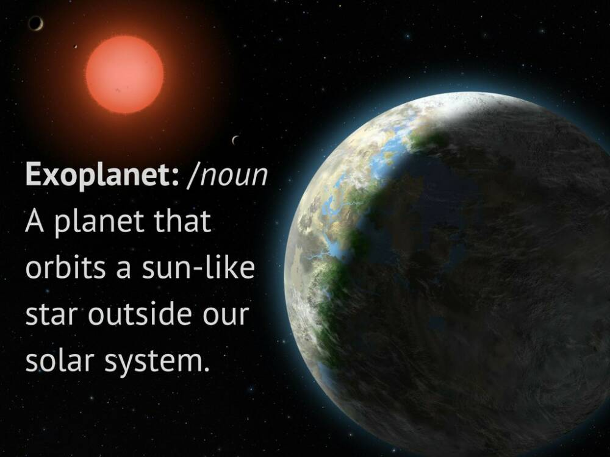
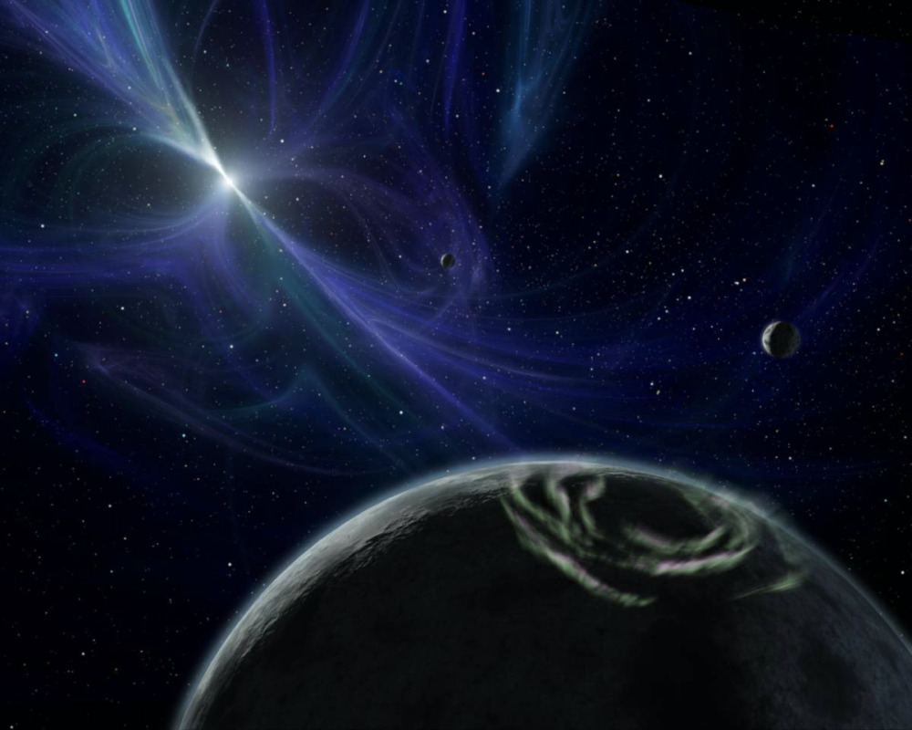
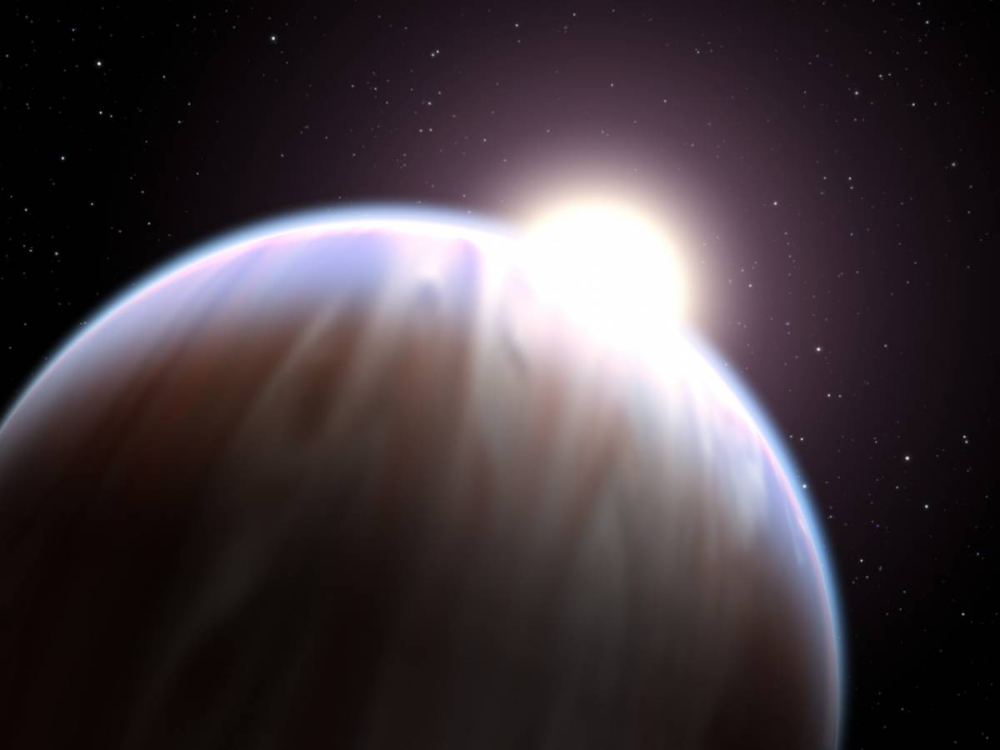
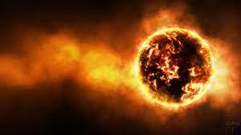
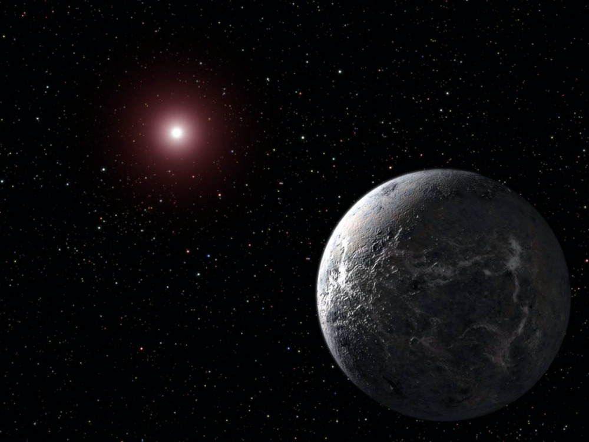
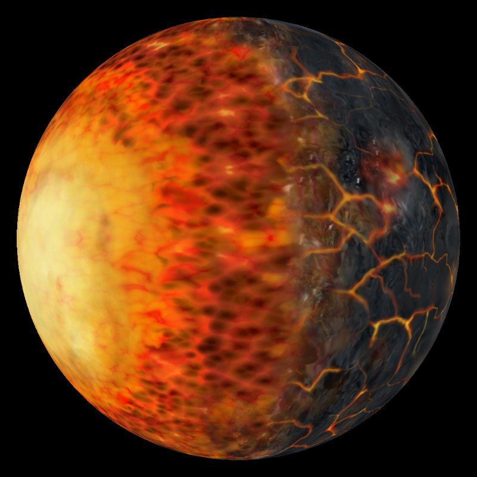

Топ-5 самых жутких экзопланет
Астрономы могут быть как никогда близки к тому, чтобы обнаружить планету, пригодную для жизни. За последние пару лет им удалось найти достаточное количество «землеподобных» планет, однако миров, которые совсем не похожи на наш, было обнаружено в разы больше. На некоторых из них условия самые что ни на есть адские.
 ©NASAТак что же такое экзопланета? Наиболее популярное объяснение таково: это планета, которая вращается вокруг звезды, похожей на Солнце, однако за пределами нашей Солнечной системы.Мы решили представить вам некоторые из самых страшных из обнаруженных доселе экзопланет, на которых вряд ли кто-либо из вас мечтал оказаться хотя бы на мгновение.
Кто желает принять радиационные ванны?
Экзопланеты PSR B1257+12 B, C и D входят в число одних из первых обнаруженных экзопланет. И так уж вышло, что это три одних из самых странных планет. Google Вся планетная система PSR B1257+12 является кладбищем, остатком того, что раньше представляло собой нормальную, функционирующую Солнечную систему. Ее конец настал с гигантским взрывом центральной звезды.
Взрыв сопровождался выбросом значительной массы вещества из внешней оболочки звезды, который привел к униsчтожению всего живого (если что-то вообще было) на этих планетах. От самих планет остались лишь каменистые оболочки, которые вращаются вокруг «трупа» исчезнувшей звезды.
Условия на PSR B1257+12 B, C и D весьма экзотические. Две из них имеют массу, аналогичную массе Земли, и весьма близки к пульсару, который совершает полный оборот вокруг своей оси всего за 6,22 миллисекунды. Магнитное поле нейтронной звезды является источником интенсивного излучения. Кроме того, магнитное поле разгоняет элементарные частицы как ускоритель. На планеты все время падает сильнейший дождь из ионов. Такие условия будут смертоносными для любого из нас.
 ©NASAВетер, ветер, ты могуч…
Звук завывания ветра является неотъемлемой частью любого дома с привидениями, однако погодные условия на экзопланете HD 189733 b делают это место куда опаснее любого настоящего жилища, населенного призраками.
На первый взгляд эта планета выглядит как типичный «горячий Юпитер» – газовый гигант, расположенный очень близко к центральной звезде системы. Из-за близости к родительской звезде на светлой стороне HD 189733 b поддерживается температура около 930 °С. Ее же вращение синхронизировано с ее орбитальным движением, в связи с этим HD 189733 b всегда повернута к светилу одной стороной.
 ©NASAОднако когда астрономы измерили температуру на темной стороне планеты, они были шокированы, обнаружив, что она в разы холоднее светлой (примерно 425 °С). Так в чем же подвох?
Все дело в ветре. Невероятно быстрый, опасный ветер гонит тепло с дневной стороны планеты к ночной со скоростью, превышающей скорость звука почти в шесть раз. По сравнению с ним даже самый устрашающий ураган на Земле кажется легким морским бризом.
Сказка о новорожденной экзопланете и палящей звезде
 ©NASAK2-33b является самой молодой полностью сформировавшейся экзопланетой из когда-либо обнаруженных. Сопоставимая по своим размерам с Нептуном, эта планета совершает полный оборот вокруг своего светила за 5 земных дней. И поскольку эта планета находится почти в 10 раз ближе к своей звезде, чем Меркурий к Солнцу, она до невозможности горячая.
Неважно, как сильно вы любите новорожденных, от этого «младенца» вы бы старались держаться как можно дальше.
Одинокая и очень-очень холодная
В то время как большинство из обнаруженных планет подходят под описание слова «адская» , есть и такие, к которым этот эпитет не применителен ни в коем случае.
Ярким примером таковой является экстремально холодная экзопланета OGLE-2005-BLG-390L b. Она совершает полный оборот вокруг своей материнской звезды – тусклого и холодного красного карлика – за 10 земных лет. И это то еще путешествие! Средняя температура поверхности OGLE-2005-BLG-390L b составляет всего 50 K. А это, как вы догадываетесь, очень и очень холодно.
 ©NASAВыжженный мир
Kepler-10b – это выжженный мир, обращающийся вокруг своего светила – старого желтого карлика – за 0,84 земных суток, на расстоянии около 1/20 от радиуса орбиты Меркурия. Планета имеет чрезвычайно высокую температуру поверхности – более 1300°С на дневной стороне, и является первой открытой железной планетой. Очень высокая температура поверхности приводит к тому, что железо на планете находится в жидком состоянии.
 ©NASA